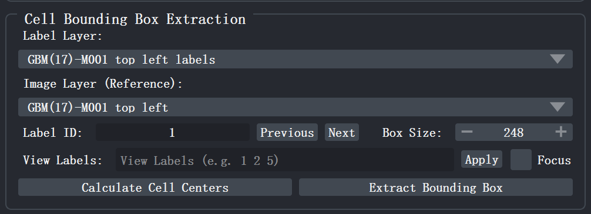
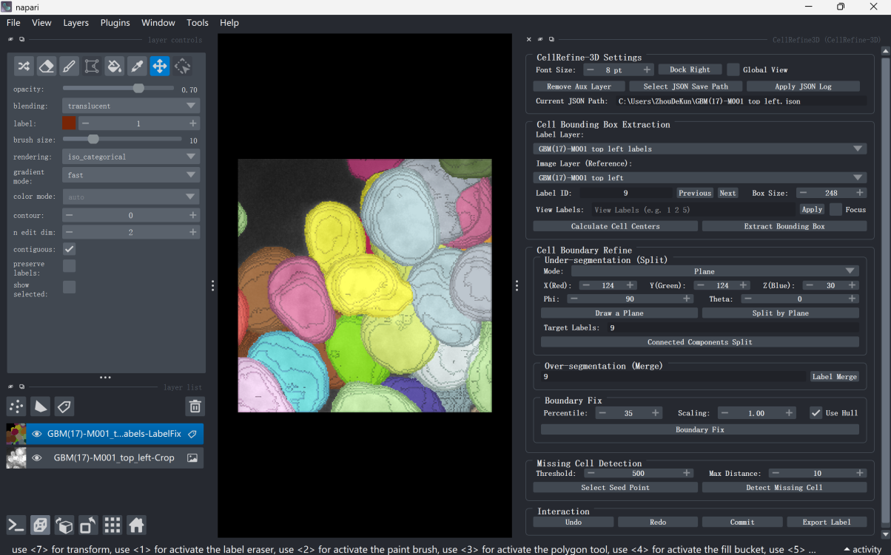
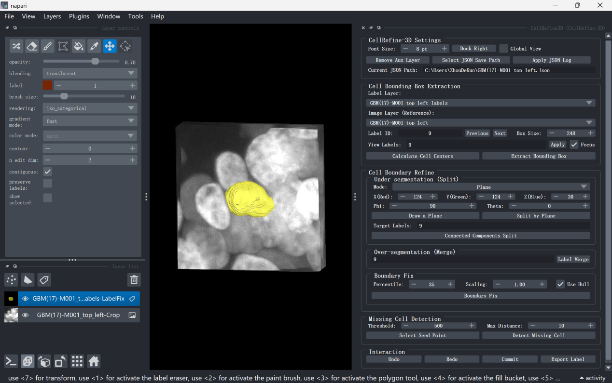

Basic Operations of NuPatch3D¶
All editing operations in NuPatch3D are performed within a local region (Bounding Box) to reduce interference from surrounding cells on the target cell (specified by the Label ID input box).

3.1 Calculate Cell Centers¶
In the Cell Bounding Box Extraction module of the plugin panel, click Calculate Cell Centers. NuPatch3D will calculate the center coordinates of all non-zero labels in the Label Layer and build a label index.
At the same time, NuPatch3D will automatically initialize Box Size to twice the nucleus diameter to ensure that the cropped region fully contains the target cell while minimizing interference from irrelevant neighborhoods.
3.2 Set Target Cell Label and Crop Region Size¶
The label ID of the target cell can be directly modified through the Label ID input box, or switched sequentially via the Previous and Next buttons.
To improve switching efficiency, NuPatch3D provides the following shortcuts:
- A: Switch to the previous label;
- D: Switch to the next label.
In addition, the side length of the cropping cube (unit: pixels) can be manually adjusted through the Box Size input box.
3.3 Extract Local Editing Region¶
After clicking Extract Bounding Box, the plugin will simultaneously crop a cubic region centered on the target cell with a side length of Box Size (default is twice the target cell diameter) from the Image Layer and Label Layer, and generate the following two layers in napari:
<ImageName>-Crop: Local original image (type Image), serving as the reference image for subsequent editing;<ImageName>-LabelFix: Local label image (type Labels), on which all refinement operations are performed.
After extraction, the plugin will automatically uncheck Global View, hide the global layers, and retain only the local Crop and LabelFix layers. At this point, you can use napari's basic view functions to rotate, zoom, and browse slices of the local region to evaluate segmentation quality.

3.4 View Label Filtering¶
Enter the label IDs to be displayed in the View Labels input box (multiple labels separated by spaces), and then click Apply.
After execution, the plugin will automatically enable Focus mode, displaying only the specified labels while hiding the rest.
If Focus is checked and View Labels is empty, only the target cell corresponding to the current Label ID is displayed by default.
Focus is an independent display switch:
- When checked: only focused labels are displayed;
- When unchecked: all labels are restored.
You can quickly switch between the focused view and full display via the shortcut F.
In addition, the shortcut Shift+R can toggle between "display all labels" and "display only labels specified by View Labels", which has the same effect as clicking the Apply button.

3.5 Global View Toggle¶
If you need to compare with global data during editing, check the Global View checkbox in the NuPatch3D Settings region.
When enabled, the global Image and Labels layers will reappear in the napari viewer. When unchecked, only the local Crop and LabelFix layers are displayed.
3.6 Clean Up Auxiliary Layers¶
After performing Plane splitting, Manual point selection, Missing Cell Detection, and other operations, auxiliary layers may remain in the napari Layers panel, such as:
- Plane Label Splitting-Points
- Plane Label Splitting-Shapes
- Plane-Spherical-Axes
- GMM-Coordinates
- Missing-Cell-Seeds
For the purposes of these auxiliary layers, please refer to Under-segmentation.
Click the Remove Aux Layer button in the Settings region at the top of the plugin, or use the shortcut Shift+C, to delete all auxiliary layers created by NuPatch3D with one click, and automatically switch focus back to the current editing layer to avoid affecting subsequent operations.
All editing operations—whether plugin algorithm fixes or napari native annotations—are managed within a unified undo/redo stack and cached in real time to the memory log. Users can revert to any historical state at any time, or submitstage-by-stage results to the global original data and export it as TIFF or serialize the JSON log for complete restoration.